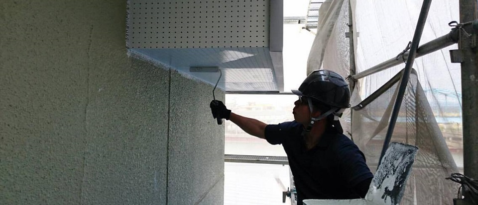

←お問い合わせはこちら
TEL (0173) 29-2204

HOME
会社の特徴
業務内容
会社概要
施工実績
会社概要
会社名
小笠原塗装株式会社
所在地
〒037-0632
青森県五所川原市高野字広野1番地
電話番号
0173-29-2204
FAX
0173-26-7204
E-mail
phsxp823@ybb.ne.jp
代表取締役
小笠原崇文
社員数
4名
社員紹介
小笠原崇文
社長
昭和51年11月3日 五所川原市出身
趣味
ボランティア、スキー
好きなもの
ラーメン
三戸啓行
親方
昭和60年1月11日 板柳出身
意気込み
お客さんによろこんでもらえるような仕事をしたい。
生活のため。
好きな動物
ネコ
今明志香
平成1年1月21日 つがる市出身
意気込み
お客さんによろこんでもらえるような仕事をしたい。
メガネ
三浦一貴
昭和56年 9月26日 五所川原出身
意気込み
お客さんによろこんでもらえるような仕事をしたい。
好きな動物
犬
社長あいさつ
やあ
所在地図